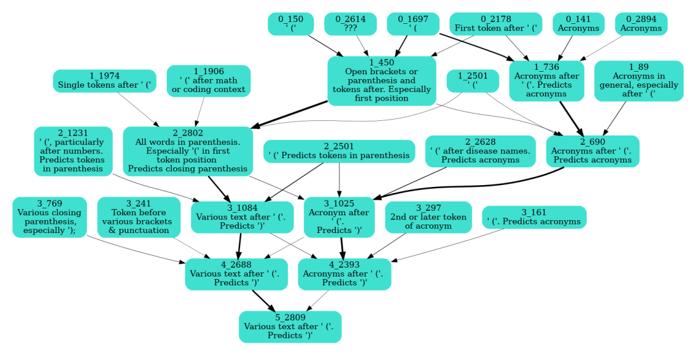

Causal-tree circuit for the closing-parenthesis feature

Reading the causal tree
Each box is a single dictionary feature, identified by its layer number and feature index, with a short human-written gloss of what real-world pattern it seems to detect. Layer-0 features sit at the top, later layers below, and every path converges on one layer-5 feature at the bottom: the target whose unembedding predicts closing-parenthesis tokens. An arrow from an upstream feature to a downstream one is not a correlation; it records a specific test in which that upstream feature was ablated and the downstream feature's activation dropped, so it encodes a measured causal contribution. Arrow thickness scales with how much the downstream activation fell under ablation, so the thickest paths are the dominant causes and thin ones are minor. It is easy to over-read this as the model's complete wiring diagram for the behavior. It is not: at each node only the previous layer's features were tested as candidate parents, one layer at a time, so an absent arrow means untested or below threshold, not proven unrelated, and the tree only ever traces one hop per layer transition.
What the circuit shows
Two branches feed the root. One tracks generic parenthetical context: features for an open bracket itself, for the first token after it, and for words continuing inside the parenthesis, chained up through the middle layers into features that fire on text after an open parenthesis and predict a close. A second, parallel branch tracks acronyms specifically, with layer-0 and layer-1 features for acronyms in general converging through mid-layer features for acronyms following an open bracket. The two branches merge just before the root. The paper reports that unembedding this final feature yields closing-parenthesis token variants as its top predicted outputs, and frames earlier layers as detecting the range of contexts -- dates, acronyms, and other phrases -- that tend to precede a closing parenthesis (sparse-autoencoders, §"5.3 INTERMEDIATE FEATURES: DICTIONARY FEATURES ALLOW AUTOMATIC CIRCUIT DETECTION", p. 8).
Why this matters
This is Automatic feature circuit detection applied to a worked example, the Closing-parenthesis dictionary feature: rather than ranking a whole set of features against one behavior, it recursively chains single-hop ablation tests across depth to build an interpretable multi-layer circuit out of individual Dictionary feature units. The paper contrasts this success with a Weight-based feature connection attempt (failed method) at connecting features across layers by multiplying through the MLP weights, which found no meaningful matches -- ablation-based tracing succeeded where a purely weight-based method failed.